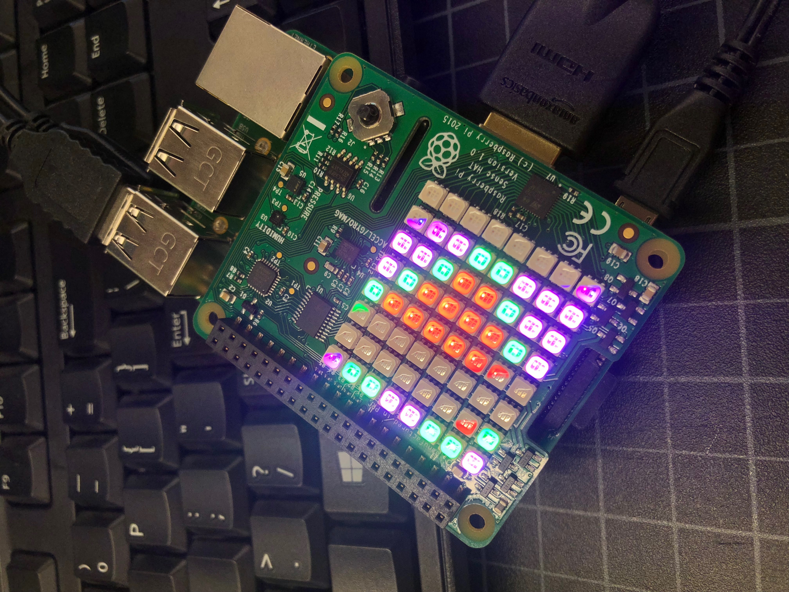
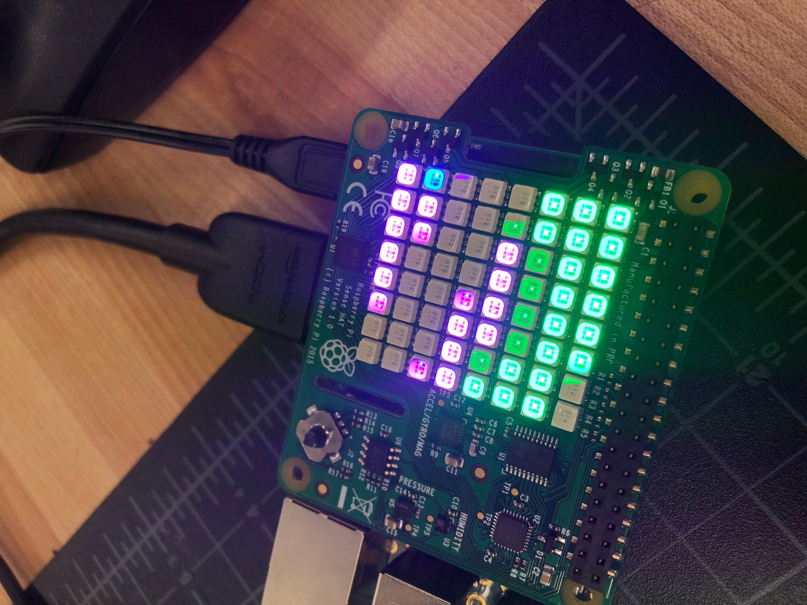
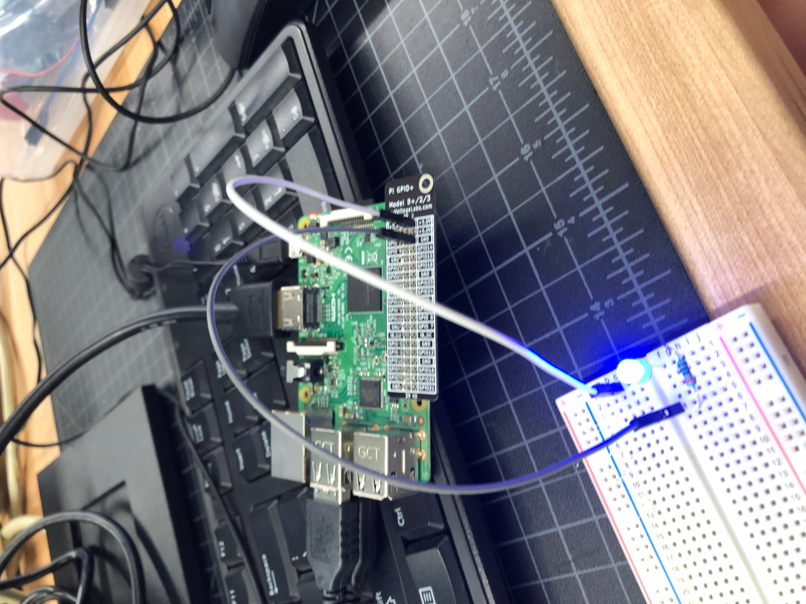

Rotation 10: Raspberry Pi
Project Description:
Raspberry Pi was so much fun! Within the first day of using it we got to play Minecraft and other games that were programmed on.
I learned how to hook up the Raspberry Pi to the computer, plugging in the power source last. I also learned that while using the programs like Scratch or Python, on letter wrong or capitalized when it should not be can causes the entire circuit to fail.
Scratch and Python are important while using Raspberry Pi because they are the softwares that we use for programming circuits like pictures. These softwares use coding language to do so.
My favorite part of Raspberry Pi was using the camera and taking videos with Marcella. I also liked when we added specific coding onto Python to add a color filter over the picture that was taken.
Below are some picutres of the resulting circuit from our coding on Python.


